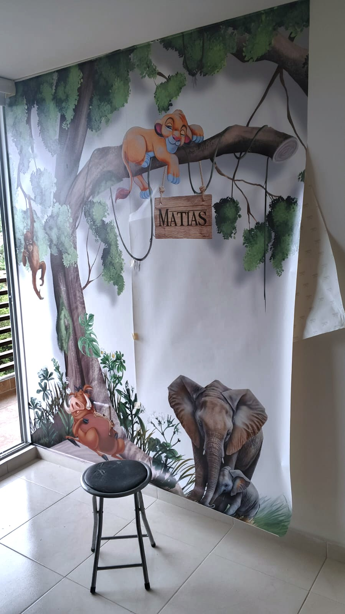
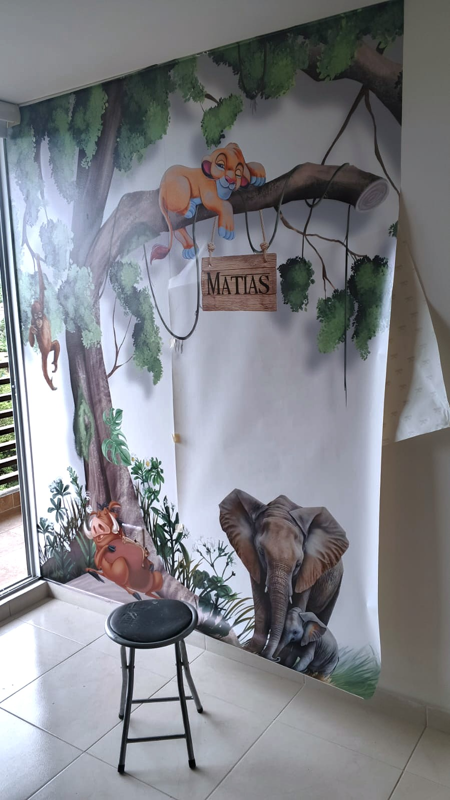

¿Qué son los vinilos decorativos y dónde usarlos? ✨
 

Los vinilos decorativos se han convertido en una de las formas más prácticas, modernas y creativas de transformar espacios sin obras, sin desorden y sin grandes inversiones 💡.
Si alguna vez has querido cambiar una pared, personalizar un vidrio o darle identidad a tu negocio, pero sin complicaciones, este artículo es para ti.
🎨 ¿Qué son los vinilos decorativos?
Son láminas adhesivas de alta calidad que se instalan sobre superficies lisas como paredes, vidrios, muebles o incluso vehículos.
Existen vinilos impresos, de recorte, esmerilados, microperforados y texturizados, lo que permite adaptarlos a cualquier estilo o necesidad.
🧩 Personalización total
Puedes elegir colores, formas, frases, imágenes o diseños corporativos. Cada vinilo es único.
⏱️ Instalación rápida
En pocas horas tu espacio luce completamente diferente, sin polvo ni desorden.
♻️ Removibles
Cuando quieras cambiar el diseño, puedes retirarlos sin dañar la superficie (si se hace correctamente).
Un pequeño cambio visual puede transformar por completo un espacio 💫 Y los vinilos lo hacen posible.
🏠 ¿Dónde se pueden usar los vinilos decorativos?
Una de las mayores ventajas de los vinilos es su versatilidad. Funcionan tanto en hogares como en espacios comerciales.
- ✔️ Paredes de salas, habitaciones y cocinas
- ✔️ Vidrios y ventanas (vinilo frosted o microperforado)
- ✔️ Oficinas y consultorios
- ✔️ Locales comerciales y vitrinas
- ✔️ Vehículos y computadores (skins)
🏢 Vinilos para negocios y empresas
En espacios comerciales, los vinilos no solo decoran, también comunican. Ayudan a reforzar la marca, señalizar espacios y generar una mejor experiencia para clientes y colaboradores.
Desde logotipos en vidrio hasta señalización obligatoria, los vinilos son una herramienta visual poderosa.
En resumen, los vinilos decorativos son una solución práctica, estética y accesible para renovar cualquier espacio. No importa si es tu casa, tu negocio o tu oficina: siempre hay un vinilo ideal para ti 😊.